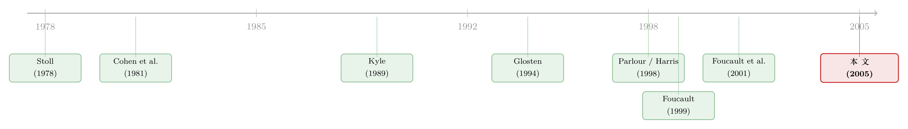

谁在替这个没有做市商的市场「报价」？
本文读的是 Bloomfield, O'Hara & Saar (2005, JFE)：在一个没有指定做市商的电子限价订单市场里，作者用实验室市场发现，知情交易者 (informed traders) 反而比流动性交易者更多地使用限价订单；更关键的是，随着交易推进、价格逐步逼近真值，知情者会从「拿走流动性」转为「提供流动性」——一个做市 (market-making) 的角色，就这样在市场里内生地长了出来，并最终被那些下限价单时最不怕被「逆向选择」的人接管。
1 一个没有做市商的市场，谁来报价？
先想一个看似简单、其实很别扭的问题。
在传统的交易所里，流动性是有人「负责」的。纳斯达克有做市商 (dealer)，纽交所有专家 (specialist)，他们的职责就是随时挂出买价和卖价，你想买，他卖给你；你想卖，他买下来。市场的流动性，是这些专门的中介「供给」出来的。
可是过去二十多年，金融市场最汹涌的一股潮流，恰恰是把这些中介一脚踢开。加拿大、德国、以色列、英国的股票交易所纷纷电子化，Euronext 把好几家欧洲交易所合并成一张电子盘；在美国，Island、Instinet、Archipelago 这些电子通讯网络 (electronic communications networks, ECNs) 一度吃下了纳斯达克高达 45% 的成交量。公司债、国债、外汇、期货、期权——几乎每一类资产，都在往电子限价订单簿 (electronic limit order book) 这个结构上迁移。
而这个结构最刺眼的特征是：它没有指定的流动性提供者。
那流动性从哪来？答案是「内生」的。谁愿意挂一个买单或卖单，等着别人来成交，谁就在「制造 (make)」流动性；谁愿意直接去吃掉簿子上已有的单子，谁就在「拿走 (take)」流动性。这就是本文标题里的那个核心抉择——make or take。市场的买卖价差和价格行为，说到底就是所有交易者「愿不愿意供给、又愿不愿意索取」流动性的合力。
于是一个自然的问题冒了出来：在这样一个谁都可以挂单、也谁都可以吃单的市场里，到底是谁，在替这个没有做市商的市场报价？ 流动性，是怎么从一群各怀心思的交易者手里，自己冒出来的？
这正是 Bloomfield、O'Hara 和 Saar 想回答的事。而他们的回答里，藏着一个相当反直觉的主角:知情交易者。
2 理论的「死结」：为什么非得做实验
按理说，这是个该由理论来回答的问题。可微观结构理论在这里撞上了一堵墙。
问题出在「复杂度」。一个交易者要决定的，远不止「挂单还是吃单」这一件事。他还要决定何时交易——是开盘就动手，还是熬到最后一分钟？交易多少——一次打光，还是把单子摊开慢慢喂？买还是卖，甚至是不是又买又卖?更要命的是，他这一连串决策的收益，取决于市场里所有其他人的集体策略。再叠加上信息不对称——有人知道资产真值、有人不知道——这个最优下单策略的求解问题，用作者的原话说，「generally renders the problem unsolvable（一般来说会让问题变得无解）」。
理论文献怎么办？只能靠「砍」。砍假设，把问题砍到能算为止。
这正是本文方法论上的立足点：既然理论必须靠强假设才能求解，那我们就用实验市场去检验——当这些强假设被一个个放松，交易者的行为还成不成立？
作者把过往理论分成了三股，每一股都「砍」掉了一些东西：
- 第一股：干脆假设知情者只会下市价单。Rock (1990)、Glosten (1994)、Seppi (1997) 都把知情交易者写成「急性子」——他们急着趁信息没扩散前兑现，所以只「拿」不「给」。这个假设之所以重要，是因为它直接决定了限价单提交者面对的逆向选择风险 (adverse selection)：限价单偏偏在「成交了反而亏」的时候更容易成交。可如果现实里知情者也下限价单呢？这套结论还稳吗？
- 第二股：把市场状态（比如订单簿的样子）外生地固定下来，让交易者在给定环境里选。Angel (1994) 和 Harris (1998) 由此推出几条预测：知情者更倾向用市价单、信息越值钱（真值离预期越远）越爱用市价单；而流动性交易者会先用限价单、临近「截止线」再切换到市价单。
- 第三股：让价差、深度这些市场属性内生地涌现，但代价是把交易者降格成「只能动一次手」的静态决策者。Foucault (1999) 据此预测真值波动越大、限价单提交率越高（怕被「捡漏 (picked off)」，于是把限价单报得更保守、价差更宽）；Parlour (1998) 则刻画了订单簿状态如何因为时间优先权而「挤出」后来的限价单。
三股理论，三种「砍法」。每一刀都让模型可解了，却也都让人心里打鼓：结论到底是真规律，还是假设的副产品？
实验的妙处就在这里。在实验室里，你可以外生地操纵那些在真实市场里根本观测不到、更别说控制的东西——谁知情、信息有多值钱、波动有多大——然后干干净净地看交易者怎么反应。这是自然市场永远给不了的「上帝视角」。
3 把市场搬进实验室：识别策略
实验设计本身，就是这篇论文最硬的「识别策略」。我们一点点拆。
基本构件。 6 个人一组，叫一个同群 (cohort)，他们始终一起交易。一场 session 是 75 分钟，一组人在里头连续交易 20 只证券 (security)。每只证券交易时，6 个人里随机指定 2 人为知情者，被告知该证券的真实价值；另外 4 人是流动性交易者，不知道真值。每个人都知道自己是哪一类、也知道场上有几个知情者几个流动性者，但不知道具体是谁——而且这些角色在不同证券之间会轮换。全实验 8 个同群、共 48 名参与者。
接着，作者做了四组关键的「操纵 (manipulation)」，每一组都对应着理论里那个想检验的变量：
① 操纵波动率 (volatility)。 高波动设定下，真值在 0 到 50 实验室美元之间近似均匀分布；低波动设定下，真值服从一个均值 25、标准差 5 的截断钟形分布。两者期望都是 25，只有方差不同。每组在高、低波动各交易 10 只证券。——这是冲着 Foucault (1999) 去的。
② 操纵极端度 (extremity)。 高极端度的真值至少偏离预期 $15，低极端度的偏离不超过 $7。这是在调节知情者信息的「含金量」：真值离预期越远，知情者手里的牌越值钱。——这是冲着 Angel (1994)、Harris (1998) 去的。
作者借审稿人的话点出了一个漂亮的区分：波动率代表逆向选择的「潜在威胁」，极端度代表私有信息「实际兑现」的价值。两者分开操纵，就能在「固定流动性者对逆选择的感知」的同时改变「知情者信息的价值」，反之亦然。这一刀切得非常干净。
③ 操纵时间 (elapsed time)。 每只证券的主交易期是 120 秒，被切成八个 15 秒的区间。于是「随时间推移交易者行为怎么变」这件事，就有了八个可比的时间切片。——这是冲着 Harris (1998) 关于「临近截止线才切换到市价单」的预测去的。
④ 流动性交易者的「目标」。 流动性者被分成大、小两类，分别被要求在收盘前买入或卖出一定数量的股票，对应大机构和小散户两种不同的交易难题。
整个实验是一个全因子重复测量设计 (fully factorial repeated-measures design)：交易者类型 × 波动 × 极端度 × 重复 × 时间 × 同群。统计分析时，作者按同群分组、每个同群只取一个观测进入检验——这是为了不把「同一组人内部的相关」错当成独立信息，从而避免高估自由度。这个细节，决定了后面那些显著性结论站不站得住。
控制项也下足了功夫。 为了不让结论被「证券之间的差异」「同群之间的差异」「学习效应」「赌徒心态」污染，作者：让每组都交易 12 只偏离 $25 幅度完全相同的证券（只有这些进分析，另外 8 只只是为了让真值分布「看起来」符合告知给交易者的形态）；一半同群先高波动后低波动、另一半反过来；靠随机分配角色、把练习场次的数据全部剔除来对冲学习效应；甚至用一个交易者不知道的「地板价」去减损失，以此压住「输红了眼乱下注」的所谓「house money 效应」。
把市场搬进实验室，最怕的就是「不像」。但这套设计——连续交易、可见的订单簿、价格-时间优先、即时成交回报、可撤单、限价单与市价单并存——几乎复刻了真实电子限价订单簿的全部要件。它甚至模仿了纳斯达克每天开盘前那段「只挂单、不成交」的预交易期（本实验设为 30 秒），好让主交易期一开始订单簿就是满的。
4 反转：知情者从「猎手」变成了「做市商」
铺垫了这么多，现在是揭晓答案的时候。结果有两层，第二层尤其漂亮。
第一层，静态的反差。 教科书式的假设是「知情者只下市价单」。实验结果直接打脸：知情者和流动性者都既用限价单也用市价单，但知情者用的限价单更多。这一条，本身就推翻了 Rock-Glosten-Seppi 那一脉的核心设定。
第二层，动态的反转——这才是全文的「主结果」。 流动性的供给，随着交易推进发生了戏剧性的迁移，而这场迁移的钥匙，攥在知情者手里:
- 交易刚开始时，知情者远比其他人更爱「拿」流动性——他们急着吃掉簿子上的现有订单，趁价格还没反应过来，把私有信息变现。这时候他们是猎手。
- 随着价格朝真值靠拢，知情者悄悄换挡，开始大量提交限价单。这个转变如此明显，以至于到交易期快结束时，知情者平均比流动性交易者更频繁地用限价单成交。猎手，变成了做市商。
- 与此同时，那些有大额目标的流动性交易者走的是相反的路：他们早期更多用限价单，但临近收盘、眼看目标还没完成，只好切换到市价单去「追单」。这一条，恰好印证了 Harris (1998) 的预测。
为什么知情者会这样「变脸」？作者做了一番细致的条件分析，把机制锁定在信息价值的动态变化上——而这一点，正好被实验的「极端度」操纵照亮了：
当信息「很值钱」时（真值离预期远、价格还没调整到位），知情者倾向用市价单，抢在价格调整前把利润落袋；当信息「不那么值钱」时（价格已经基本反映了真值），他们就迅速转入做市商角色，主要靠向市场供给限价单来赚钱。
换句话说，知情者不是「天生爱挂单」，而是精明地随着自己信息的剩余价值，在猎手与做市商之间来回切换。他们 take（拿走）流动性是在信息高价值的时候，make（提供）流动性是在信息低价值的时候。
5 为什么偏偏是知情者来做市？
到这里，真正深刻的那一步才浮出水面。
一个做市商角色，内生地在这个电子市场里诞生了。但它没有落到随便谁头上,而是被一类特定的人接管——那些下限价单时风险最低的人。
谁的风险最低？正是知情者。
道理是这样的。任何提交限价单的人，都面临执行风险 (execution risk)：你挂的单子可能根本成交不了。这一点知情者和流动性者一样躲不掉。但流动性交易者还要额外背一份逆向选择风险——他们不知道真值，他们的限价单，偏偏会在「成交了对自己不利」的时候被成交。而知情者不背这份风险：他们知道真值，所以当他们决定挂限价单做市时，是在一个对自己信息有利的位置上做的。
于是结论水落石出。Stoll (1978) 当年论证：在对称信息的世界里，做市商应该是那个「比别人更能分散风险、因而更能承受风险」的人。而在这个非对称信息的世界里，承担做市职能的天然人选，变成了那个不必额外承受逆向选择风险的人——知情者。做市，是被逆向选择风险最低的人挑走的活儿。
这就回答了开篇那个别扭的问题，也顺带解释了一个更大的现象：为什么电子限价订单市场，能在与传统做市商/专家制度的竞争中如此成功？
因为即便存在信息不对称，交易者自己就会把流动性供出来，市场不再需要一个正式的、而且通常更昂贵的流动性提供者。更妙的是——当市场进入更不确定的状态、内生流动性可能枯竭时，那些被指定的正式做市商其实也好不到哪去。换句话说，电子市场没有因为「裁掉做市商」而在坏天气里更脆弱，因为坏天气对谁都一样难。
这个「知情者兼具交易者与做市商双重身份」的画面，也重新定义了信息在市场里扮演的角色。传统模型里，知情者一旦把信息打进价格就该退场了；而这里，知情者在信息兑现之后还能继续赚钱——通过摇身变成流动性提供者、赚取价差。信息让他们能把价格推向有效水平，也让他们比别人更有资格去做市。
6 文献脉络
把这篇论文放回它所在的那条线里看，会更清楚它的位置。
故事的源头，是 Stoll (1978) 对做市商供给的经典追问：在对称信息下，谁该当做市商？答案是更能分散风险的人。紧接着，Cohen、Maier、Schwartz 和 Whitcomb (1981) 提出了「引力拉扯 (gravitational pull)」模型，第一次把「下限价单还是市价单」刻画成一场「更好的价格 vs. 不确定的执行」之间的动态权衡——价差越窄，限价单的价格优势越小，人们越偏向确定成交的市价单。

然后，信息不对称被请进了模型。Kyle (1989) 让交易者提交整条需求函数，但那个框架里所有订单都是限价单，没有「选择」可言。Rock (1990)、Glosten (1994)、Seppi (1997) 这一脉则明确放进了知情者，但一律假设他们只下市价单——这个假设让模型可解，也埋下了本文要拆的那颗雷。Angel (1994) 和 Harris (1998) 在此基础上给出了一组关于「谁更爱限价单、何时切换到市价单」的可检验预测。
第三波，Parlour (1998) 让订单簿状态内生，刻画时间优先权如何挤出后来的限价单；Foucault (1999) 让价差内生，预测波动越大限价单提交率越高；Foucault、Kadan 和 Kandel (2001) 把限价订单簿本身看成一个「流动性的市场」。但这几位都为了可解，要么舍弃了知情者，要么把交易者锁死成「只动一次手」的静态决策者。也有少数例外，比如 Chakravarty 和 Holden (1995)、Kaniel 和 Liu (2002)，开始允许知情者使用限价单。
本文 (2005) 站在这条线的交汇点上：它不去再砍一刀假设，而是用实验把这些被各家分别松绑的维度——知情/不知情、信息价值、波动、订单簿状态、时间——同时放回一个市场里，然后看行为如何涌现。它给出的「知情者内生做市」，正是过往那些静态、单维模型够不到的图景。
（顺带一提，电子限价订单市场里「信息与匿名」的另一面，可参见《看不见报价人的名字，价差为什么反而变窄了？》；而把「成交质量晒在阳光下、订单是否真跟着走」的实验式追问，可参见《把成交质量晒在阳光下，订单就真的跟着走了吗？》。)
7 评论与延伸（Q&A + 研究方向）
(a) 几个可能的疑问
Q：实验室里 48 个学生的下单行为，凭什么能说明真实电子市场里机构和算法的事？
这是实验金融绕不开的「外部有效性」之问。本文的护身符是「制度同构」：它复刻了真实电子限价订单簿的几乎全部机制（连续交易、可见簿、价格-时间优先、可撤单、限价/市价并存）。它要检验的不是「数值能否外推」，而是一个定性命题的稳健性——当理论的强假设被放松，「知情者只下市价单」还成不成立。对这种定性反驳，实验恰恰是干净的：你在自然市场里根本观测不到谁知情、信息多值钱，而这里能外生地控制它们。
Q：「知情者比流动性者更爱限价单」这个结果，会不会只是因为流动性者被强加了「目标」、被逼着去打市价单？
部分如此，但这正是要点而非缺陷。流动性者临近收盘切换到市价单去追目标，本身就是 Harris (1998) 的预测得到印证。关键在于知情者没有这种被迫的紧迫感，他们的限价单是主动选择的结果；而且作者强调的是动态反转——知情者从早期偏市价单转向晚期偏限价单——这个时间维度上的转变，不是「目标约束」能解释的。
Q：那条「信息高价值时拿流动性、低价值时给流动性」的机制，是直接观测到的，还是事后讲的故事？
是被实验设计「点亮」的，而不是事后附会。作者专门用极端度操纵去外生地改变信息价值（高极端度 ≥
$15、低极端度 ≤$7），再做条件分析，看知情者的 make/take 选择如何随之变化。正因为信息价值是被实验者拨动的旋钮、而非从数据里反推的，这个机制才具备因果含义。
Q：这和传统做市商有什么本质区别？知情者「做市」是不是只是换个名字的操纵？
本质区别在于风险承担的逻辑。Stoll (1978) 的做市商靠「更能分散风险」立身；本文的内生做市商靠「不背逆向选择风险」立身。所有挂限价单的人都担执行风险，但只有不知情者额外担逆选择风险，所以做市这门生意自然流向知情者。这不是操纵，而是信息优势在「做市」这个维度上的自然变现。
Q：这是不是意味着，电子市场在危机里会因为「没有正式做市商兜底」而更脆弱？
本文的态度相当克制甚至偏乐观。作者承认内生流动性在更不确定的市况里可能枯竭，但紧接着提醒：同样的市况下，指定做市商也同样无能为力。也就是说，「裁掉做市商」未必带来额外的脆弱性，因为坏天气对内生与指定两种供给者一视同仁。当然，这只是逻辑论证，不是对危机的实证——真实危机里的答案要复杂得多。
Q：知情者既当裁判又当运动员，价格发现 (price discovery) 会不会被拖慢？
恰恰相反，本文的图景里价格发现和做市是同一枚硬币。知情者早期 take 流动性的过程，本身就在把价格推向真值；当价格基本到位、信息价值耗尽，他们才转去 make 流动性。所以做市不是对价格发现的妨碍，而是价格发现完成之后的自然延续——信息既让价格变有效，也让知情者更适合接手做市。
(b) 几个可能的研究问题与提案
1. 把这套「内生做市」搬到公司债市场去检验。
【经济故事】公司债正从电话询价的 OTC 结构，缓慢迁向 BrokerTec、MTS 这类电子平台（本文引言就点了名）。如果本文的机制成立，那么在公司债电子盘上，信息优势方（比如持有该发行人内部消息的机构）会不会也在信息价值耗尽后转去挂限价单做市？这对理解债券流动性「在谁手里、何时供给」极有价值。 【可行性】中。TRACE 能给到成交，但限价订单簿数据在公司债里稀缺；可考虑用 MarketAxess 或某个电子平台的订单级数据。识别上可借「评级变动事件」「盈余公告」等信息冲击当作外生的「信息价值」变化，做事件窗口内的 make/take 行为分解。难点是知情身份不可观测，只能用代理。
2. 外资持有人是不是「天然的内生做市商」？
【经济故事】本文的核心逻辑是「逆向选择风险最低的人来做市」。在跨境市场里，谁的逆选择风险更低——本地知情者还是外资？如果外资在某些市场反而信息劣势，那他们更可能是「被做市」的一方；反之若外资握有全球信息优势，他们或许会内生地承担做市职能。这把本文的洞见接到了外资持有人与市场流动性的争论上。 【可行性】中偏低。需要带交易者国别标识的订单级数据（少数交易所如韩国、台湾有），识别上可利用「可投资度 (investability) 改革」之类的自然实验外生地改变外资准入。doable，但数据门槛高。
3. 算法做市 vs. 知情做市：内生流动性供给的「身份」在高频时代变了吗？
【经济故事】本文写于 2005 年，那时还没有今天意义上的高频做市商。当算法以毫秒级抢着提供流动性，本文「知情者最终接管做市」的图景会不会被改写？是算法把知情者挤出了做市岗位，还是知情者借算法做市做得更狠？ 【可行性】中。需要带账户类型标签的高频订单簿数据（部分监管数据集有）。识别上可用交易所撮合速度升级、共置 (colocation) 推出等技术冲击做 DiD。挑战在于「知情」与「快」在数据里高度纠缠，要小心区分。
4. 把「信息价值耗尽 → 转做市」做成一个可估计的结构模型。
【经济故事】本文用实验把机制讲清楚了，但没给出一个可以拿真实数据估计的结构。如果能把「知情者随剩余信息价值动态切换 make/take」写成一个最优停时/动态规划问题，就能反推真实市场里「信息价值的衰减速度」这个不可观测量。 【可行性】中偏低。理论上 doable（Harris 1998、Foucault 1999 已提供积木），但把它做成可估计并用订单簿数据识别，工程量很大，且需要对「信息价值」给出可信的观测代理。属于高风险高回报的方向。
(c) 我的判断
这篇论文最大的贡献，是用一种近乎「降维打击」的方法，拆掉了微观结构理论里一个被默认了太久的假设——「知情者只拿流动性、不提供流动性」。它没有再去构造一个更精巧的模型，而是直接把那些理论各自被迫舍弃的维度同时还原进一个真实运转的市场，然后让结论自己涌现。「做市是被逆向选择风险最低的人挑走的活儿」，这句话的简洁与深刻，足以让它成为理解电子市场为何成功的一块基石。
但识别上有两点值得保留态度。其一，外部有效性：48 名参与者、实验室美元、120 秒的市场，与真实世界里机构博弈、算法对垒的电子盘之间，隔着一道无法用实验弥合的鸿沟——本文证明的是「定性命题的稳健性」，而非「数值的可外推性」，读者切忌过度解读。其二，截止线效应的人为性：实验里那条 120 秒的硬约束，制造了流动性者「临近收盘追单」的行为，这固然印证了 Harris (1998)，但真实市场的「截止线」远比这模糊、也远比这内生，知情者与流动性者的相对节奏未必照搬。
我接下来最想看到的，是把这套内生做市的逻辑放进一个真实、且信息身份可识别的市场里去验证——公司债电子化进程，或带国别/账户标签的订单级数据，都是天然的试验田。如果「信息价值耗尽后转做市」能在真金白银的市场里被重新捕捉到，那这篇二十年前的实验论文，就不只是一个漂亮的实验室故事，而是一条贯穿了整个电子交易时代的暗线。
参考文献
- Angel, J. J. (1994). Limit versus market orders. Working paper, Georgetown University.
- Bloomfield, R., O'Hara, M., & Saar, G. (2005). The "make or take" decision in an electronic market: Evidence on the evolution of liquidity. Journal of Financial Economics 75(1), 165–199.
- Chakravarty, S., & Holden, C. W. (1995). An integrated model of market and limit orders. Journal of Financial Intermediation 4(3), 213–241.
- Cohen, K. J., Maier, S. F., Schwartz, R. A., & Whitcomb, D. K. (1981). Transaction costs, order placement strategy, and existence of the bid–ask spread. Journal of Political Economy 89(2), 287–305.
- Foucault, T. (1999). Order flow composition and trading costs in a dynamic limit order market. Journal of Financial Markets 2(2), 99–134.
- Foucault, T., Kadan, O., & Kandel, E. (2001). Limit order book as a market for liquidity. Working paper, HEC School of Management.
- Glosten, L. R. (1994). Is the electronic open limit order book inevitable? Journal of Finance 49(4), 1127–1161.
- Harris, L. (1998). Optimal dynamic order submission strategies in some stylized trading problems. Financial Markets, Institutions, and Instruments 7(2), 26–74.
- Kaniel, R., & Liu, H. (2002). So what orders do informed traders use? Working paper, University of Texas, Austin.
- Kyle, A. P. (1989). Informed speculation with imperfect competition. Review of Economic Studies 56(3), 317–355.
- Parlour, C. (1998). Price dynamics in limit order markets. Review of Financial Studies 11(4), 789–816.
- Rock, K. (1990). The specialist's order book and price anomalies. Working paper, Harvard University.
- Seppi, D. J. (1997). Liquidity provision with limit orders and a strategic specialist. Review of Financial Studies 10(1), 103–150.
- Stoll, H. (1978). The supply of dealer services in securities markets. Journal of Finance 33(4), 1133–1151.
- Sunder, S. (1995). Experimental asset markets: A survey. In J. H. Kagel & A. E. Roth (Eds.), The Handbook of Experimental Economics. Princeton University Press.